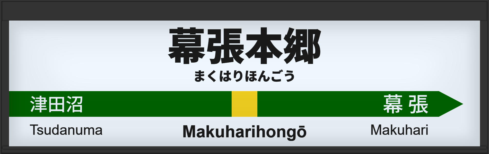

| ←津田沼 | ■ 中央・総武線(各駅停車) | 幕張→ |
|---|
1999年12月に初期型ATOS放送を導入。
2007年3月には旧型に更新。
2014年3月に常磐改良型に更新される。
| 1 | ■ 中央・総武線(各駅停車) 三鷹方面 |
1番線接近放送 1番線到着放送 |
放送は「」です。 初期型でした。 |
|---|---|---|---|
| 3 | ■ 中央・総武線(各駅停車) 千葉方面 |
3番線接近放送 3番線到着放送 |
放送は「」です。 初期型でした。 |